arXiv 2405.05941 · cs.RO · 2024 年 5 月 9 日 · 中文精读
Evaluating Real-World Robot Manipulation Policies in Simulation
作者 16 人，Xuanlin Li、Kyle Hsu、Jiayuan Gu 为共同一作，Karl Pertsch 和 Oier Mees 为核心贡献者，Hao Su、Quan Vuong、Ted Xiao 共同指导。单位为加州大学圣地亚哥分校、斯坦福大学、加州大学伯克利分校和 Google DeepMind。
关于这份精读。这篇论文在 arXiv 上以 CC BY 4.0 发布，注明出处就可以转载、翻译和改编。为了和本站其他页面一致，正文仍按精读的形式整理：按原文顺序覆盖正文七节和附录 A 到 G，小节编号与原文一致，可以对照 PDF 阅读。
公式按原文编号给出，表格数字照录原文。插图直接取自原文 PDF，只做了裁切，图下的说明是本页写的。标成“读者注”的框是整理时核算或对照发现的问题，不属于论文内容，页尾有汇总。
通用机器人操作策略能做的任务越来越多，真机评测的成本也跟着上涨：要在很多任务和场景下各跑几十次，又慢又贵，换一个实验室还很难复现。论文的主张是，仿真评测可以成为真机评测的替身，而且可扩展、可复现、结论可靠。
作者认为，真实环境和仿真环境之间最影响评测的是两类差距：控制差距和视觉差距。他们没有去做完整的数字孪生，而是用两套轻量的办法缩小这两类差距，并据此搭出 SIMPLER：一组对应常用真机平台的仿真评测环境。用配对的仿真和真机评测检验后，结论有三条。
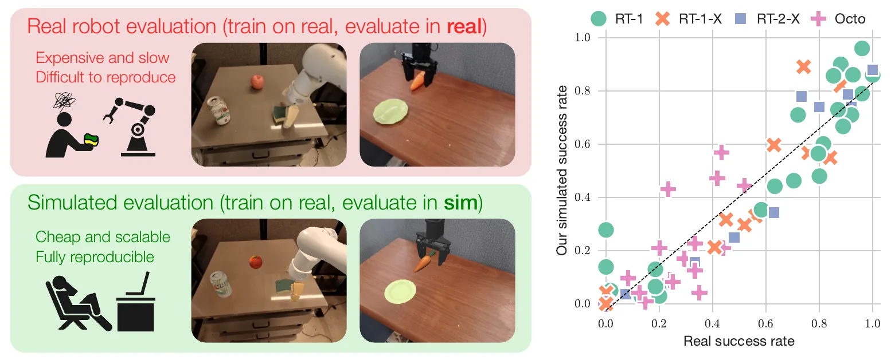
背景。近几年，能跨任务、跨环境甚至跨机器人工作的通用操作策略进展很快，背后是大规模数据集和表达力强的模型。但这类策略很难评测：真机评测昂贵、低效，而策略能力越广，要得到可信的成绩估计，需要评测的范围就越大。作者把问题概括为：策略能力在扩展，评测能力怎么跟着扩展？
思路。把用真实数据训练的策略放到专门搭建的仿真环境里评测，也就是 real-to-sim 评测（图 1）。自动驾驶早就在部署前用仿真测试大量驾驶场景；sim-to-real 方向的研究也说明，仿真和现实之间可以有可观的迁移。不过 sim-to-real 是在仿真里训练、到真机上评测，这里问的是反方向：怎样为真实数据训练的策略搭一个仿真评测系统。
为什么不做数字孪生。导航和自动驾驶常用数字孪生，即完整复刻真实环境。在操作任务里，动态可交互的物体、真实的材质和光照都还很难重建，通常要美术人员手工建模；质心、惯量、静摩擦和动摩擦这些物理参数也很难精确测出来，规模化更难。
关键想法。不需要精确复刻真实环境，只需要仿真“够真实”，让策略在仿真里的成绩和真机成绩相关。这样环境搭建流程就能比数字孪生省事得多。作者用离线系统辨识缩小控制差距，用真实背景的“绿幕”合成和从真实图像烘焙物体纹理缩小视觉差距，在此基础上搭出 SIMPLER（Simulated Manipulation Policy Evaluation for Real Robot Setups），覆盖 RT-1 和 BridgeData V2 两套常用的真机评测平台（图 2），并在两套平台上对 RT-1-X、Octo 等开源策略做了大量配对的仿真与真机评测。
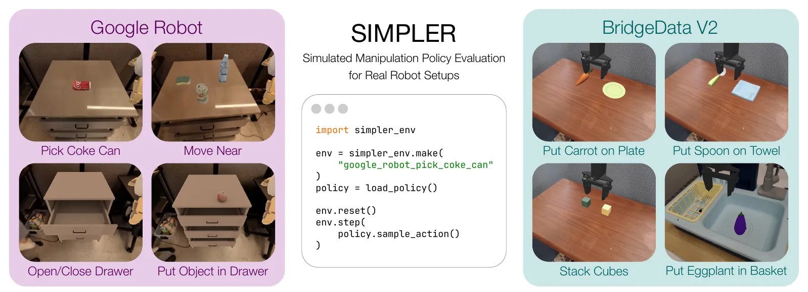
simpler_env.make 建环境，再用标准的 Gym 接口 reset 和 step。作者同时开源了 RT-1、RT-1-X 和 Octo 的推理代码。三项贡献。
真机评测的可复现性。抓取和运动规划有专门的基准，但很难推广到更广的任务。YCB 和 NIST 想统一实验物体，可光照、相机和工作台很难统一。亚马逊拣选挑战赛、DARPA 机器人挑战赛的办法是用固定的线下比赛场地。TOTO 让远程用户共用同一套硬件，并提供离线训练数据；RB2 让各实验室共享实验数据，把各自的局部排名合成全局排名。这些方案都要长期维护真实的评测场地，投入很大。真机数据集和通用策略越来越多，对可靠、可扩展、可复现的评测方法的需求也越来越迫切。
仿真基准。已有大量仿真基准支持可扩展、可复现的评测，一些真实机器人挑战赛也加入了仿真环节。但这些工作大多在仿真里训练、也在仿真里评测，策略放到真机上可能表现完全不同。本文要衡量并提高的，正是仿真评测反映真机表现和行为的能力。
仿真能否预测真机表现。导航方向已经有人研究过。Kadian 等人用 3D 扫描复制房间，RoboTHOR（Deitke 等人）用美术资产复制房间，再比较仿真里训练的模型在仿真和真机上的表现。前者指出动力学差异会让策略钻仿真器的空子；后者发现即使资产出自专业美术，视觉差异也会明显影响策略。Zhang 等人则在部署时把真实图像转回合成域。本文关注的是操作任务，它的难点在于策略和环境的交互回路很紧：场景是动态的，动作序列很长，细小的偏差就可能改变结果。
sim-to-real。操作方向的 sim-to-real 研究很多，核心难点是“现实差距”。常用办法是域随机化，在训练时随机化仿真参数，在行走、复杂动力学操作和灵巧手内操作上都很成功；视觉上常用域适应，比如用 GAN 把仿真图像改成真实风格，或者对齐仿真和真实观测的特征空间。本文问的是反方向：怎样搭一个能忠实评测真实操作策略的仿真系统。
仿真评测对研究者很有用：能减少昂贵的真机评测，还能以几乎为零的额外成本扫一遍各种受控条件，给出更完整的画像。作者强调，目标不是完全取代真机评测，仿真永远只是不完美的替身；目标是给研究者一个随手可用的改进信号。
所以仿真评测追求的不是 1:1 复现策略在真机上的行为，而是相对成绩的强相关：真机上策略 A 比 B 好，仿真里也应该 A 比 B 好。形式化地说，两个策略 \(\pi_a\)、\(\pi_b\) 有真机成绩 \(R_a\)、\(R_b\)，例如在一组代表性任务上的平均成功率；要构造一个仿真器 \(\mathcal{S}\)，让它给出的成绩 \(R_{\mathcal{S},a}\)、\(R_{\mathcal{S},b}\) 的相对关系和真机强相关。
Pearson 相关系数 r 衡量两组数的线性一致性，前人用它评价过仿真评测。r ≈ 1 表示真机成功率的提升在仿真里线性地体现出来（图 3 最左的虚线），r 低则说明两者联系弱（图 3 左二）。
作为唯一指标，它有两个缺点。第一，它只看线性拟合，可仿真评测并不需要线性关系，只要能反映策略之间的提升就够了（图 3 右二）。第二，它不反映数值的范围：几个策略的真机成绩挤在很窄的区间时，真机评测本身的噪声就会让 r 大幅变化（图 3 最右，灰色和绿色两组）。
排名指标能解决第一个问题，但像 Spearman 秩相关这样的指标仍然只看名次、不看差距：图 3 最左和左二都只排反了一对，得分相同。可最左那对的真机成绩本来就很接近，排反多半来自真机评测的噪声；左二那对差得很远，是评测流程真的出了问题。所以要按排反的两个策略在真机上的差距，给每次错排加权。作者据此提出平均最大排名违规（MMRV）。给定 \(N\) 个策略，真机成绩 \(R_{1\ldots N}\)，仿真成绩 \(R_{\mathcal{S},1\ldots N}\)：
式 (1) 只在仿真把 \(i\)、\(j\) 两个策略排反时计分，分值是两者的真机差距。式 (2) 对每个策略取它最严重的一次错排，再对 \(N\) 个策略取平均。MMRV 的取值在 0 到 1 之间，越低越好。之后论文同时报告 MMRV 和 Pearson r。
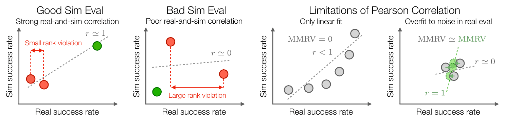
以拿可乐罐任务为例，视觉匹配设定，6 个策略。真机从高到低是 RT-1 (15%) 0.920、RT-2-X 0.907、RT-1 (Converged) 0.853、RT-1-X 0.760、Octo-Base 0.293、RT-1 (Begin) 0.133；仿真前三名是 RT-1 (Converged) 0.857、RT-2-X 0.787、RT-1 (15%) 0.710，后三名顺序不变。
排反的有三对：Converged 和 15%，真机差 0.067；Converged 和 RT-2-X，差 0.054；15% 和 RT-2-X，差 0.013。每个策略取自己最严重的一次：Converged 0.067，15% 0.067，RT-2-X 0.054，其余三个是 0。平均下来 (0.067 + 0.067 + 0.054) / 6 = 0.031，和表 IV 一致。
这个算法有个副作用：分母是策略数。附录表 XIII 加入一个只用拿可乐罐数据训练的 RT-1，它和谁都没有排反，MMRV 就从 0.031 变成 0.188 / 7 = 0.027。分数变好完全来自 N 从 6 变成 7。
作者借鉴 sim-to-real 的文献：仿真器的保真度主要从两个方向影响迁移，一是控制系统的动力学差距，二是视觉真实感的差距。本文做的是反方向的问题，但第 VI 节会证明，同样这两个方向决定了仿真评测有没有参考价值。
目标是让同一个动作在仿真里和在真机上对末端执行器产生差不多的效果。具体说，把一段动作开环地在仿真里回放，得到的 6D 末端位姿轨迹和关节轨迹，应当接近真机回放同一段动作时记录下来的轨迹。
设真机回放动作序列 \(\{a_i\}_{i=1}^{T}\) 时记录的末端位姿轨迹是 \(\{(x_i,R_i)\}_{i=1}^{T}\)，其中 \(x_i\in\mathbb{R}^3\)，\(R_i\in SO(3)\)。仿真用刚度和阻尼，也就是 PD 参数 \((p,d)\)，从同一个初始位姿开环回放同一段动作，得到 \(\{(x_i',R_i')\}_{i=1}^{T}\)。系统辨识的损失由平移误差和旋转误差组成：
数据。从离线数据集，比如在真实环境里采的示范数据中，取一小部分轨迹，拿到动作和末端位姿，计算上面的损失。本文所有环境用的都是现成的开源示范数据（RT-1 数据集和 BridgeData V2），不需要新采数据。
优化。给定初始 PD 参数 \((p_0,d_0)\) 和搜索范围，把范围归一化到 \([0,1]\)，用模拟退火最小化 \(\mathcal{L}_{\mathrm{sysid}}\)。取损失最低的参数作为 \((p_1,d_1)\)，缩小搜索范围再做一轮，一共 3 轮。
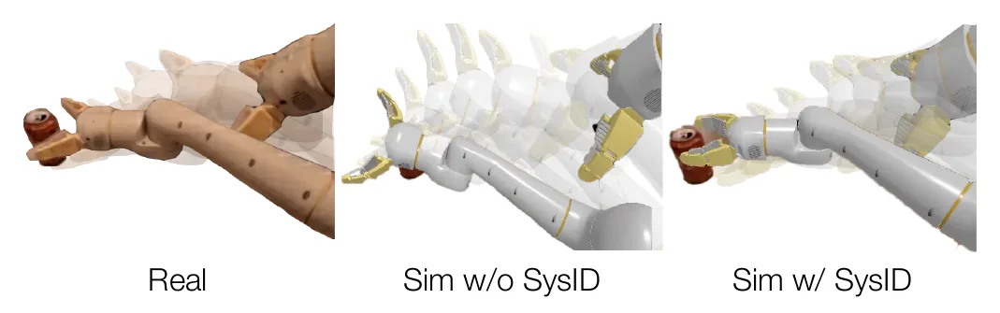
设 \(\theta\) 是 \(R\) 和 \(R'\) 之间的转角，则 \(\lVert R-R'\rVert_F^2=6-2\,\mathrm{tr}(R^\top R')=4-4\cos\theta=8\sin^2(\theta/2)\)，即 \(\lVert R-R'\rVert_F=2\sqrt{2}\sin(\theta/2)\)。所以式 (4) 里的 \(\arcsin\) 一项恰好等于 \(\theta/2\)，单位是弧度。
式 (5) 把以米为单位的平移误差和以弧度为单位的半转角直接相加，相当于把 1 cm 的平移误差和约 1.15° 的转角误差看得一样重。论文没有讨论这个权重。
视觉差异本身就是一种分布偏移，会让学到的策略行为失常，使仿真评测不可靠。现代渲染管线可以做到很逼真，但要为现成的真实环境建资产、定光照参数，需要大量人工。作者的目标是只花适度的人工，把仿真画面对齐到真实环境。
绿幕。场景背景用“绿幕”的办法处理，把真实环境的图像垫在仿真场景后面（图 5）。步骤是：
纹理匹配。只换背景往往不够，被测的策略常常对前景物体和机器人的纹理很敏感；现成的仿真资产在纹理、材质和光照上和真实物体也有差别。所以作者对差距最明显的物体和机器人部件调整纹理，有两种做法：
机械臂在运动中颜色会变，作者调出几种分别对应任务不同阶段的机械臂颜色，评测时对它们的结果取平均，以减少这个干扰因素。以上这套做法称为视觉匹配（Visual Matching）。
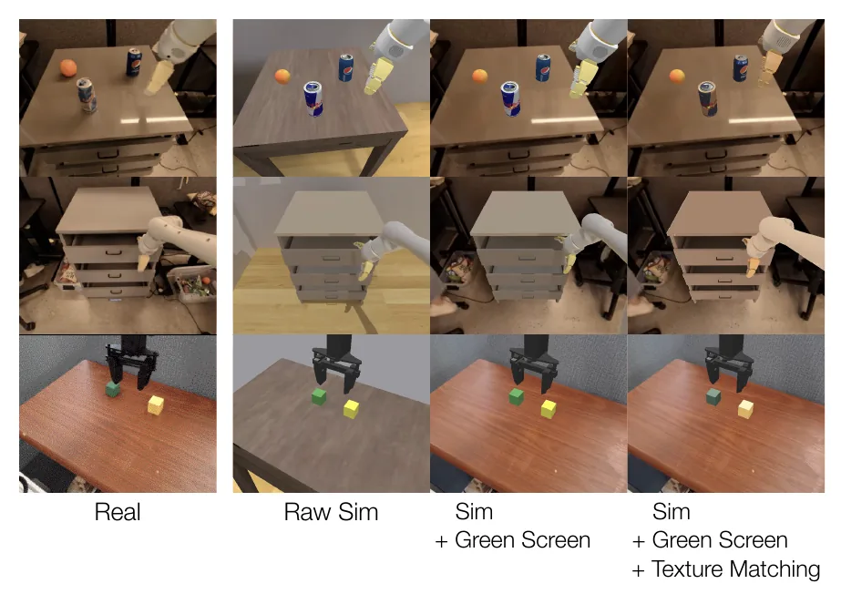
另一种思路：变体汇总。作者还试了一种受域随机化启发的办法：不去缩小差距，而是大幅随机化场景的视觉要素，生成多个环境“变体”，看把各变体上的成绩汇总起来，能不能更忠实地估计策略的真实表现。这种办法称为变体汇总（Variant Aggregation），细节见附录 C-C，第 VI 节和视觉匹配做比较。
作者用第 IV 节的方法搭出 SIMPLER，覆盖两套常用的真机评测平台：RT 系列论文的 Google Robot，以及 WidowX 加 BridgeData V2。
每套平台都提供多个任务，涵盖不同的技能、交互物体、物体位置与朝向、背景和光照（图 2）。任务挑的是在对应训练数据里有代表性的，而且主要是刚体，现代物理仿真器能较好地模拟。
SIMPLER 搭在 SAPIEN 物理仿真器上；第 VI-D 节说明这些做法不依赖具体仿真器，在 Isaac Sim 上也能复现。资产和场景的获取流程如下，细节见附录 C：
SIMPLER 可以用 pip 安装，通过常见的 Gym 接口交互（图 2）。单个环境在一块 RTX 4090 上以 640 × 512 分辨率渲染，每秒能跑 3.5k 个仿真步。仿真频率是 500 Hz，所以比真机评测快 7 倍。所有环境和搭建新环境的详细指南都已在 simpler-env.github.io 开源。
本节用一组有代表性的开源通用操作策略，检验真机评测和 SIMPLER 仿真评测之间的成绩相关性，回答五个问题：
为了定量比较，作者做了配对的仿真和真机实验。被测策略是开源通用策略 RT-1-X 和 Octo（Octo-Base 和 Octo-Small）。在 Google Robot 环境里，还用了 RT-1 训练过程中的几个检查点：训练到收敛的 RT-1 (Converged)，训练到 15% 步数的 RT-1 (15%)，刚开始训练的 RT-1 (Begin)；另外也报告了 RT-2-X 的结果。每个任务的评测协议和次数见附录 B。
Octo 的动作头是带随机性的扩散头，所以它的仿真成功率取 3 个随机种子的平均，以降低估计的方差。Google Robot 的仿真评测还对 4 种机械臂和夹爪颜色取平均，用来对应真机回放中手臂外观的变化（见第 IV-B 节）；WidowX 的手臂和夹爪在各个视频里都是一致的黑色，跳过这一步。
主要的配对结果汇总在图 6 和图 7。在大多数策略检查点和任务上，仿真和真机的相对成绩强相关，这对把 SIMPLER 当作开发策略时的衡量工具是个好消息。真机上强的策略，比如 Google Robot 上的 RT-1 (Converged) 和 RT-2-X、BridgeData V2 上的 Octo-Small，在仿真里也强；真机上弱的，比如 Google Robot 上的 RT-1 (Begin)、BridgeData V2 上的 RT-1-X，在仿真里也弱。这体现为低 MMRV 和高 Pearson r。另外，有的策略对仿真和真实之间的视觉差异更敏感，RT-1 (15%) 和 Octo-Base 在仿真和真机之间的成功率变化最大。
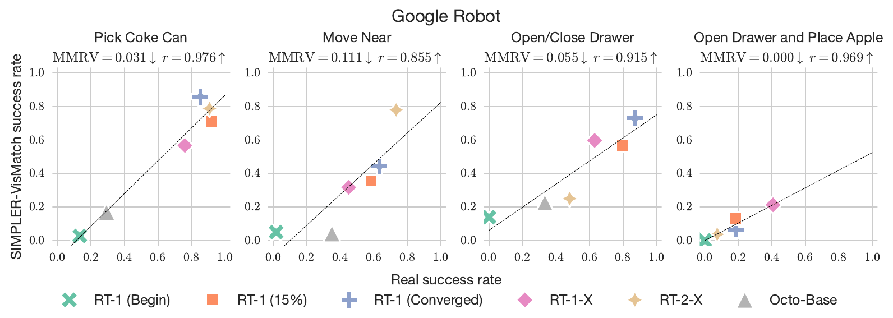
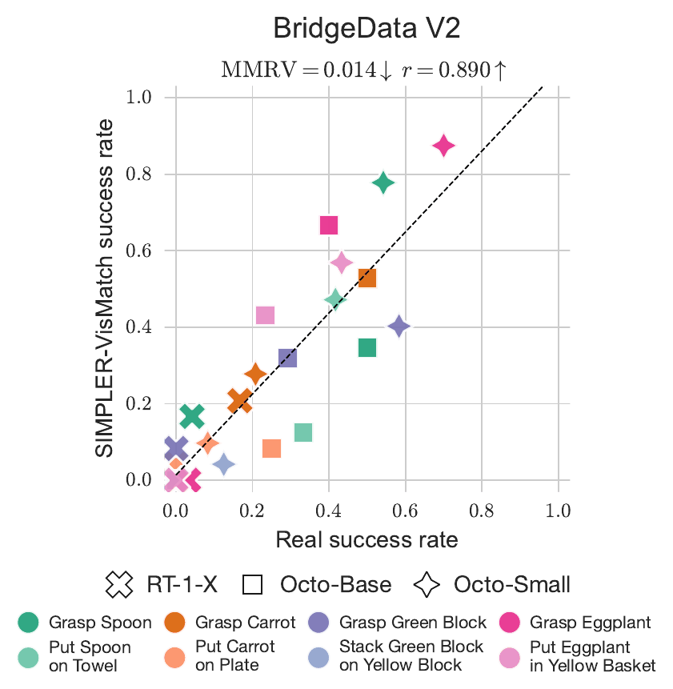
表 I 把 SIMPLER 和一种不用仿真的做法比较：在验证用的示范轨迹上算预测动作的 MSE，用它给策略排序。用验证损失选模型在监督学习里很常见，但结果印证了很多机器人研究者的直觉：对模仿学习来说，验证 MSE 不是真机成绩的好代理，MMRV 高、r 低。SIMPLER 的 MMRV 低得多，r 高得多。
| 评测方式 | 拿可乐罐 | 移到旁边 | 抽屉 | 平均 |
|---|---|---|---|---|
| MMRV（越低越好） | ||||
| 验证集 MSE | 0.412 | 0.408 | 0.306 | 0.375 |
| SIMPLER 变体汇总 | 0.084 | 0.111 | 0.235 | 0.143 |
| SIMPLER 视觉匹配 | 0.031 | 0.111 | 0.027 | 0.056 |
| Pearson r（越高越好） | ||||
| 验证集 MSE | 0.464 | 0.230 | 0.231 | 0.308 |
| SIMPLER 变体汇总 | 0.960 | 0.887 | 0.486 | 0.778 |
| SIMPLER 视觉匹配 | 0.976 | 0.855 | 0.942 | 0.924 |
表 I · 原文第 8 页。给 Google Robot 上 6 个策略检查点排序时三种评测方式的效果，6 个检查点是 3 个 RT-1、RT-1-X、RT-2-X 和 Octo-Base。加底色的是每列最好的值。
变体汇总比视觉匹配差。前面说过有些策略对视觉差异敏感，而变体汇总的画面和真实画面差得更远（图 11），问题就被放大了，MMRV 更高、r 更低。作者的结论是：用 SIMPLER 做仿真评测，和真机成绩强相关；默认推荐视觉匹配，因为它直接缩小真实与仿真之间的视觉差异。
表 I 里视觉匹配的抽屉一列是 MMRV 0.027、r 0.942，和表 IV、图 6 里开关抽屉的 0.055、0.915 对不上。把“开关抽屉”和“开抽屉放苹果”两项取平均，正好得到表 I 的数：(0.055 + 0.000) / 2 ≈ 0.027，(0.915 + 0.969) / 2 = 0.942。变体汇总的 (0.321 + 0.148) / 2 ≈ 0.235、(0.737 + 0.235) / 2 = 0.486，验证集 MSE 的 (0.346 + 0.265) / 2 ≈ 0.306、(0.264 + 0.198) / 2 = 0.231，也都对得上。表注没有交代这一点。
图 7 的 MMRV 0.014 和 r 0.890，是表 V 里 8 列的平均，4 个任务各有“抓取”和“成功”两列。只看最终成功的 4 列，是 MMRV 0.028、r 0.848。
另外，BridgeData V2 只评了 3 个策略，每个 r 只基于 3 个点。叠方块的成功率一列，RT-1-X 和 Octo-Base 在真机和仿真里都是 0，只剩 Octo-Small 一个非零点，r 必然等于 1.000。
上一节比较的是平均成绩。如果仿真还能反映更细的行为特点，比如策略对光照、背景、纹理变化的鲁棒性，研究者就能做比平均成绩更细的评测。作者参照 Xie 等人，沿五个分布偏移轴做受控实验：背景、光照、干扰物、桌面纹理和机器人相机位姿。基础环境和每个轴的两个变化沿用变体汇总的设置，新加的相机位姿轴也做了两个变化。被测的是两个鲁棒性不同的 RT-1 检查点，一个训练时做了数据增强，一个没做。仿真和真机都报告加偏移前后的成功率变化：
结果见图 8 和表 VI：SIMPLER 准确反映了策略在真实世界里对各种分布偏移的鲁棒性。仿真和真机里，相机位姿和桌面纹理的影响都很大，光照和干扰物的影响都比较小。
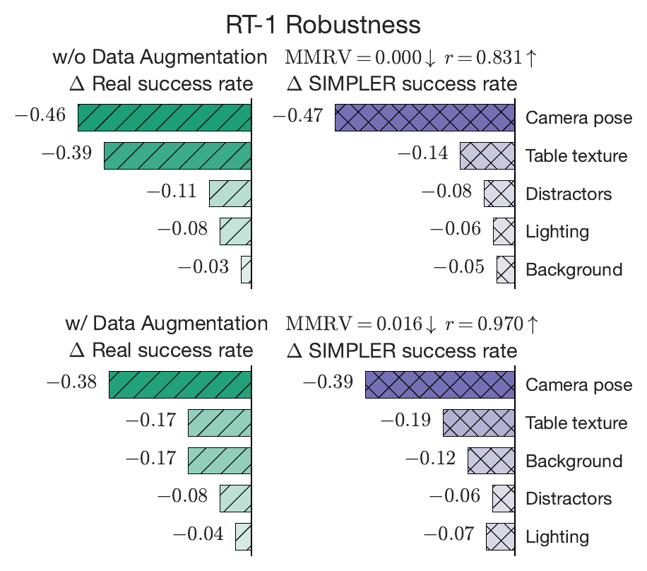
仿真还能做比图 8 更细的分析。比如真机实验里换桌面纹理时，两个策略对没见过的纯色桌面都比对没见过的花纹桌面更鲁棒，平均分别下降 4% 和 25%。仿真也是这样：换纯色桌面平均下降 2%，换花纹桌面下降 24%。
式 (6) 先把两个变体相对基础环境的变化相加再平均，保留正负号。表 VI 实际报的是两个变体各自变化的绝对值的平均：按表 VII 的数核对，20 个格子里 19 个符合这种算法，符合式 (6) 的只有 15 个。例如不做增强的 RT-1 拿可乐罐，两个背景变体是 0.933 和 0.907，基础环境 0.920，按式 (6) 是 0，表 VI 写的是 0.013。
图 8 把所有变化都画成下降，可表 VII 里有几项在仿真里其实是上升的。比如不做增强的 RT-1 移到旁边，基础环境 0.467，两个背景变体是 0.533 和 0.567，去掉干扰物的变体是 0.600。
正文说仿真里换成纯色桌面平均下降 2%。按表 VII 算，四个纯色变体的变化是 −0.053、+0.083、−0.133、+0.067，平均只下降约 1%，而且移到旁边的两个纯色变体都是上升。花纹桌面平均下降 24.9%，和正文一致。
还要注意，表 VI 的真机一列标注来自 [69]，也就是 Xie 等人的真实桌面实验，不是本文新做的真机评测。
用表 VI 自己的数重算：6 个 Pearson r 全部对得上，MMRV 却有 5 格不对。其中 4 格正好等于“最大的那一次错排”，没有按式 (2) 对各项取平均。同一个量，图 8 写做增强时 MMRV 0.016，表 VI 平均一列写 0.041。按式 (2) 算是 (0.041 + 0.041) / 5 ≈ 0.016，只排反了光照和干扰物这一对，真机差 0.041。不做增强的拿可乐罐一格，表里是 0，可光照和干扰物也排反了，真机差 0.028，按式 (2) 应是 0.011。
预测新的分布偏移。作者进一步检验，SIMPLER 能否预测策略在真机上面对新偏移时的鲁棒性。他们在仿真里观察到 Octo-Base 对机械臂纹理特别敏感：视觉匹配设定下，用没调过颜色的机械臂，成功率是 0%，换一种调过颜色的机械臂是 29.3%。同样在 Open X-Embodiment 数据上训练的 RT-1-X，对机械臂纹理就鲁棒得多。为了在真机上验证，作者设计了一种新的偏移：用几种礼品包装纸把真机械臂包起来（图 9）。真机结果支持仿真的判断：Octo-Base 比 RT-1-X 对机械臂纹理更敏感。也就是说，SIMPLER 能预测策略面对新分布偏移时在真机上的行为。
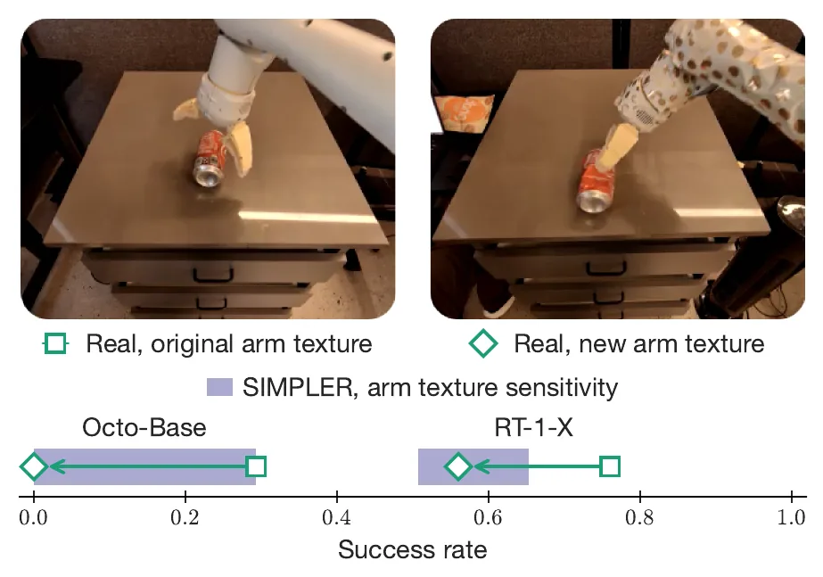
| 策略 | 仿真成功率范围 | 真机 · 原外观 | 真机 · 新外观 |
|---|---|---|---|
| RT-1-X | [0.507, 0.653] | 0.760 | 0.520 |
| Octo-Base | [0.000, 0.293] | 0.293 | 0.000 |
表 VIII · 原文第 20 页。拿可乐罐任务，仿真是视觉匹配设定，范围取自多种调过和没调过的机械臂颜色。
按绝对值算，换上礼品纸以后 RT-1-X 从 0.760 降到 0.520，降了 0.24；Octo-Base 从 0.293 降到 0，降了 0.29，两者相差不多。“Octo-Base 更敏感”主要体现在它掉到了 0：相对降幅是 100%，RT-1-X 是 32%。仿真区间也是同样的形状，Octo-Base 从 0 到 0.293，RT-1-X 只在 0.507 到 0.653 之间。
这一节检验第 IV 节缩小控制差距和视觉差距的做法各起多大作用，看仿真评测对物理属性差距是否敏感，并验证结论不依赖具体的物理仿真器。
系统辨识的作用。重复第 VI-B 节 Google Robot 的视觉匹配评测，但把系统辨识得到的关节刚度和阻尼加上扰动。表 II 显示，参数不准时 MMRV 变差，仿真和真机的相关性下降，说明准确的系统辨识很重要。论文没有给出两种扰动设置的具体数值。
| 控制参数 | 控制损失 ↓ | MMRV ↓ |
|---|---|---|
| 设置 1 | 0.267 | 0.070 |
| 设置 2 | 0.432 | 0.100 |
| SIMPLER 系统辨识 | 0.131 | 0.031 |
表 II · 原文第 10 页。Google Robot 拿可乐罐任务。系统辨识得到的参数轨迹跟踪最准，控制损失最低，和真机的相关性也最好。
视觉匹配的作用。用三个检查点在 Google Robot 开关抽屉任务上，比较背景绿幕、抽屉纹理、机器人纹理三项的不同组合（表 III，细节见表 IX）。三项一起用时 MMRV 最低，仿真和真机的成功率差距也最小。有意思的是，只调抽屉不调机器人，或者只调纹理不用绿幕背景，相关性都比什么都不做的基线好不了。作者推测，场景里各部分的外观互相不一致，本身就会拉低策略在仿真里的表现。所以这些缩小视觉差距的做法要一起用，并且覆盖场景的所有部分，才能明显提升相关性。
| 绿幕背景 | 抽屉纹理匹配 | 机器人纹理匹配 | MMRV ↓ | 真机与仿真成功率差距 ↓ |
|---|---|---|---|---|
| ✗ | ✗ | ✗ | 0.087 | 0.272 |
| ✗ | ✓ | ✗ | 0.087 | 0.266 |
| ✗ | ✗ | ✓ | 0.087 | 0.272 |
| ✗ | ✓ | ✓ | 0.087 | 0.328 |
| ✓ | ✗ | ✗ | 0.087 | 0.198 |
| ✓ | ✓ | ✗ | 0.142 | 0.253 |
| ✓ | ✓ | ✓ | 0.050 | 0.136 |
表 III · 原文第 10 页。Google Robot 开关抽屉任务，三个策略。MMRV 是开抽屉和关抽屉两项的平均；成功率差距是 3 个策略 × 2 个任务的真机与仿真成功率之差的绝对值的平均。
正文说视觉匹配消融用了 RT-1 (Converged)、RT-1 (Begin) 和 RT-1-X，附录表 IX 的列却是 RT-1 (Converged)、RT-1 (15%) 和 RT-1-X，真机成绩 0.815、0.704、0.519 也和表 IV 里这三个策略一致。RT-1 (Begin) 的真机抽屉评测因为可能损坏机器人，跑了 2 次就停了，也不可能用在这里。正文应是笔误。
表 III 只有 3 个策略，MMRV 能取的值很少：7 种组合里有 5 种都是 0.087，因为这 5 种的开抽屉 MMRV 都是 0、关抽屉都是 0.173（表 IX）。真正区分各组合的是成功率差距一列。另外，“绿幕 + 原始抽屉 + 匹配后的机器人”这个组合没有测。
对物理属性差距的敏感度。搭 SIMPLER 环境时，物体和机器人的物理属性，比如质心和摩擦系数，都做了简化。为了看仿真评测对这种差距是否敏感，作者做了两组实验：拿可乐罐任务改变空罐的质量（通过改密度）和夹爪手指的静摩擦；开关抽屉任务改变柜子关节的摩擦。结果见附录表 X：在一系列合理的参数下，MMRV 都很低、r 都很高。这些参数会让各策略的成功率变化至多 15%，但不影响排名的相关性。
对物理仿真器的敏感度。作者在 Isaac Sim 里复现了 Google Robot 的评测（图 10、附录表 XI）。SIMPLER 的效果在 Isaac Sim 上同样成立，大多数检查点上仿真和真机强相关。说明对这些以刚体为主的任务，物理仿真器的选择不关键，这套框架可以搬到别的仿真器上。
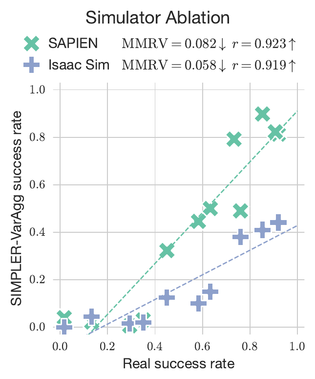
Isaac Sim 的结果（表 XI）只有 5 个策略，没有 RT-2-X。SAPIEN 的 r 0.923 是表 IV 里 6 个策略在拿可乐罐和移到旁边上的 0.960 和 0.887 的平均。SAPIEN 的 MMRV 0.082 用表 IV 算不出来：6 个策略的两项平均是 (0.084 + 0.111) / 2 ≈ 0.098，只取 Isaac 那 5 个策略是 0.112。所以图 10 不完全是同一批策略在两个仿真器上的对比。
另外，Isaac Sim 的绝对成功率只有真机的一半到四分之一：RT-1 (Converged) 拿可乐罐 0.410，真机 0.853；移到旁边 0.150，真机 0.633。相关性好说明排名对，不说明绝对值准。
通用操作策略的能力越来越强，可扩展的评测方法对算法、模型和数据集的快速迭代至关重要。本文把仿真评测作为昂贵真机评测的补充，提出 SIMPLER，一组对应常用真机平台的仿真操作评测环境。在多个开源通用策略的配对实验中，SIMPLER 和真机评测的成绩强相关；它还能刻画平均成绩之外的细节，比如策略对各种分布偏移的鲁棒性。消融实验指出了搭建仿真评测环境时哪些设计对相关性最重要。
局限。一是目前只做了刚体操作任务，因为现代仿真器最擅长模拟刚体；很多新近的操作工作已经超出刚体，借助软体仿真把评测扩展过去是未来的方向。二是绿幕只适用于固定相机，也还原不了物体的阴影等视觉细节。三是生成仿真评测环境仍需要一些人工，用来整理资产、搭场景；全自动、能批量生成成千上万个逼真环境的流程，是更远的目标。
致谢部分感谢了 Google DeepMind 帮助澄清 Google Robot 控制器细节的同事、做真机实验的操作员，以及帮助对齐前景物体外观的 Fanbo Xiang。
项目负责人是 Xuanlin Li 和 Kyle Hsu。方法主要由 Xuanlin Li、Jiayuan Gu、Kyle Hsu 提出，SIMPLER 环境由三人搭建。SAPIEN 版的实现和实验由 Xuanlin Li 和 Jiayuan Gu 完成，Isaac Sim 版由 Kyle Hsu 完成。真机实验由 Homer Rich Walke、Oier Mees、Ted Xiao、Kyle Hsu、Karl Pertsch、Ishikaa Lunawat、Isabel Sieh 以及致谢中的 Google 操作员完成。
下表是每个任务的设置和真机评测次数。
| 任务 | 设置 | 真机次数 |
|---|---|---|
| Google Robot | ||
| 拿可乐罐 | 抓起桌上的空可乐罐并举起，默认没有干扰物。罐子有横躺、竖躺、直立三种摆法，每种摆在矩形区域内 25 个网格位置。 | 3 × 25 = 75 |
| 移到旁边 | 三个物体摆成三角形，一个当源、一个当目标、一个当干扰物，每组物体在每种三角形下有 6 种分配。从 8 个物体（蓝色塑料瓶、百事罐、橙子、七喜罐、苹果、海绵、可乐罐、红牛罐）里选 5 组，三角形有正、倒两种。 | 5 × 2 × 6 = 60 |
| 开关抽屉 | 机器人站在有上、中、下三个抽屉的柜子前，按指令开或关指定的抽屉，考察操作带关节物体的能力。机器人站在地面矩形区域内 9 个网格位置。 | 9 × 3 × 2 = 54 |
| 开抽屉放苹果 | 先打开上层抽屉，再把柜顶的苹果放进去，考察更长时程的任务。机器人 3 个位置，苹果在柜顶 9 个位置。开始时给“open top drawer”指令，策略输出终止标记或用掉一半时限后，换成“place apple into top drawer”。 | 3 × 9 = 27 |
| WidowX + BridgeData V2（WidowX-250，6 自由度） | ||
| 勺子放毛巾 | 勺子和毛巾放在桌面上边长 15 cm 正方形的两个顶点，正方形 4 个顶点的有序组合共 12 种。勺子初始朝向横竖交替，需要夹爪转向。 | 2 × 12 = 24 |
| 胡萝卜放盘子 | 同上，勺子换成胡萝卜，毛巾换成盘子。 | 24 |
| 叠方块 | 边长 3 cm 的绿色和黄色方块放在正方形的两个顶点，正方形有边长 10 cm 和 20 cm 两种。 | 2 × 12 = 24 |
| 茄子放篮子 | 茄子在水槽右侧槽，黄色篮子在左侧槽。茄子以随机位置和朝向落进水槽，确保能直接抓到，不会太靠近槽边。 | 24 |
以上是真机评测的次数。变体汇总的仿真次数要乘以环境变体数；视觉匹配在 Google Robot 上要乘以机械臂颜色数，Octo 还要乘以随机种子数。
按上表，Google Robot 每个策略 75 + 60 + 54 + 27 = 216 次，6 个策略共 1296 次；BridgeData V2 每个策略 4 × 24 = 96 次，3 个策略共 288 次；合计 1584 次。RT-1 (Begin) 的抽屉任务只跑了 2 次，扣掉 52 次得 1532 次，和图 1 说的约 1500 次对得上。这个数没算机械臂外观和单任务策略两个补充实验。
上表说茄子任务做了 24 次。可表 V 里茄子的真机数字是 0.033、0.400、0.233、0.700、0.433，乘以 24 都不是整数，乘以 30 正好是 1、12、7、21、13。另外三个任务的真机数字都是 1/24 的整数倍。按表 V 的数重算，茄子两列的 r 是 0.972 和 0.970，表里写的是 0.995 和 0.990，原因不明。
Google Robot（算法 1）。模型每步输出末端的平移、旋转和夹爪动作，仿真按下面的流程执行。仿真频率 \(H_{\mathrm{sim}}\) 指每秒的仿真步数，取 501；控制频率 \(H_{\mathrm{ctrl}}\) 指每秒的策略动作数，按 RT-1 取 3。
WidowX（算法 2）。仿真频率 500，控制频率 5。正运动学用的是上一次的目标关节角，而不是实测关节角。目标位姿由下式给出，\(S\) 把位置和旋转矩阵拼成 4 × 4 的齐次变换；再用逆运动学求关节角，直接设成关节位置目标。夹爪动作是绝对量，直接作为夹爪的目标位置。
Google Robot 的仿真频率取 501 而不是 500，是因为控制频率是 3：501 / 3 = 167，每个动作正好对应整数个仿真步。WidowX 是 500 / 5 = 100 步。
两个算法都用到了 \(R_{\mathrm{arm}}\)，但都没有定义，按上下文应是前一行正运动学算出的当前末端姿态 \(R\)，上面就是这样写的。这样算法 2 的矩阵乘积可以化简：\(S(-x,I)\,S(x,R)=S(0,R)\)，再左乘两项得到 \(S(x+x_a,\;R_aR)\)，和算法 1 的目标位姿完全相同：平移量在基座坐标系里直接相加，旋转量左乘。两者真正的区别是起点和执行方式：Google Robot 从实测关节角出发，按速度和加加速度约束规划轨迹；WidowX 从上一次的目标关节角出发，直接设关节目标。
机器人。Google Robot 把公开发布的 MuJoCo .mjcf 描述转成 URDF，并修正了底座的碰撞网格，以免出现错误的穿透。WidowX 用 ROS 从官方 Interbotix 仓库直接导出 URDF。
模拟 Google Robot 时，作者发现 PhysX 的投影高斯-赛德尔（PGS）求解器在抓取物体时会让网格互相穿透，所以在 SAPIEN 和 Isaac Sim 的仿真后端里都改用时间高斯-赛德尔（TGS）求解器，才得到正确的抓取行为。本站 GAUGE 精读里评测的 Isaac Sim 刚体后端也是 PhysX。
Google Robot 用装在头部的定制第一视角相机；WidowX + BridgeData V2 用 Logitech C920 第三视角相机。
物体。除了给柜子这类关节物体精确建模以外，下面的流程不需要太多人工：
纹理的视觉匹配分五步：(1) 用 SAM 在真实图像里裁出目标物体；(2) 把物体导入仿真，粗调位置，让仿真里的分割掩码和真实掩码重叠；(3) 用 Nvdiffrast 做可微渲染，优化仿真资产的位姿，让它和真实物体的分割掩码精确对齐；(4) 把真实物体的 RGB 纹理“反投影”到仿真网格上；(5) 可选：用扩散模型 Zero123++ 生成物体的其他视角，用与已有视角之间的渲染损失细化新视角的位姿，再把新视角的纹理也反投影上去。整个过程是半自动的，命令行脚本发布在 GeTex。
sim-to-real 训练里处理视觉差距的常用办法是域随机化：在纹理、光照等随机化参数下训练，让策略对真实世界的视觉偏移更鲁棒。real-to-sim 评测可以照此办理，把一系列不同视觉条件下的评测结果汇总，得到对策略表现更忠实的估计。作者把这个思路实现为视觉匹配之外的另一种选择：先建一个“基础”环境，再沿背景、光照、干扰物、桌面纹理四个视觉轴各做 2 个变体，分别是不同房间的背景、更亮和更暗的光照、更少和更多的干扰物、纯色和复杂的桌面纹理。所有变体上的平均成绩就是最终估计。
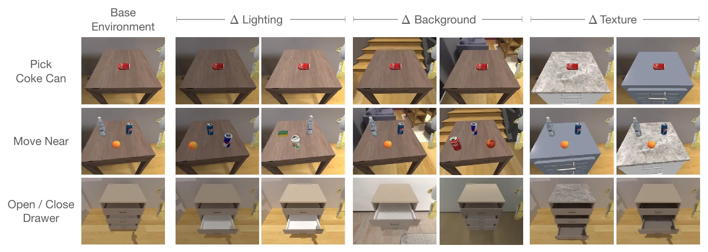
附录 D 给出第 VI-B 节相关性实验的完整结果（表 IV、表 V），附录 E 给出第 VI-C 节分布偏移实验的完整结果（表 VI、表 VII、表 VIII），附录 F 给出正文消融的完整结果（表 IX、表 X、表 XI）。表 VIII 已放在第 VI-C 节。
| 策略 | 拿可乐罐 | 移到旁边 | 开关抽屉 | 开抽屉放苹果 | |||||
|---|---|---|---|---|---|---|---|---|---|
| 横躺 | 竖躺 | 直立 | 平均 | 平均 | 开 | 关 | 平均 | 平均 | |
| 真机评测 | |||||||||
| RT-1 (Converged) | 0.960 | 0.880 | 0.720 | 0.853 | 0.633 | 0.815 | 0.926 | 0.870 | 0.185 |
| RT-1 (15%) | 1.000 | 0.960 | 0.800 | 0.920 | 0.583 | 0.704 | 0.889 | 0.796 | 0.185 |
| RT-1-X | 0.880 | 0.560 | 0.840 | 0.760 | 0.450 | 0.519 | 0.741 | 0.630 | 0.407 |
| RT-2-X | 0.920 | 0.800 | 1.000 | 0.907 | 0.733 | 0.333 | 0.630 | 0.481 | 0.074 |
| Octo-Base | 0.440 | 0.200 | 0.240 | 0.293 | 0.350 | 0.148 | 0.519 | 0.333 | 0.000 |
| RT-1 (Begin) | 0.200 | 0.000 | 0.200 | 0.133 | 0.017 | 0.000 | 0.000 | 0.000 * | 0.000 |
| SIMPLER 变体汇总 | |||||||||
| RT-1 (Converged) | 0.969 | 0.760 | 0.964 | 0.898 | 0.500 | 0.270 | 0.376 | 0.323 | 0.026 |
| RT-1 (15%) | 0.920 | 0.704 | 0.813 | 0.813 | 0.446 | 0.212 | 0.323 | 0.267 | 0.021 |
| RT-1-X | 0.569 | 0.204 | 0.698 | 0.490 | 0.323 | 0.069 | 0.519 | 0.294 | 0.101 |
| RT-2-X | 0.822 | 0.754 | 0.893 | 0.823 | 0.792 | 0.333 | 0.372 | 0.353 | 0.206 |
| Octo-Base | 0.005 | 0.000 | 0.013 | 0.006 | 0.031 | 0.000 | 0.021 | 0.011 | 0.000 |
| RT-1 (Begin) | 0.022 | 0.013 | 0.031 | 0.022 | 0.040 | 0.005 | 0.132 | 0.069 | 0.000 |
| MMRV ↓ | 0.093 | 0.133 | 0.140 | 0.084 | 0.111 | 0.303 | 0.321 † | 0.321 | 0.148 |
| Pearson r ↑ | 0.947 | 0.937 | 0.933 | 0.960 | 0.887 | 0.629 | 0.613 | 0.737 | 0.235 |
| SIMPLER 视觉匹配 | |||||||||
| RT-1 (Converged) | 0.960 | 0.900 | 0.710 | 0.857 | 0.442 | 0.601 | 0.861 | 0.730 | 0.065 |
| RT-1 (15%) | 0.860 | 0.790 | 0.480 | 0.710 | 0.354 | 0.463 | 0.667 | 0.565 | 0.130 |
| RT-1-X | 0.820 | 0.330 | 0.550 | 0.567 | 0.317 | 0.296 | 0.891 | 0.597 | 0.213 |
| RT-2-X | 0.740 | 0.740 | 0.880 | 0.787 | 0.779 | 0.157 | 0.343 | 0.250 | 0.037 |
| Octo-Base | 0.210 | 0.210 | 0.090 | 0.170 | 0.042 | 0.009 | 0.444 | 0.227 | 0.000 |
| RT-1 (Begin) | 0.050 | 0.000 | 0.030 | 0.027 | 0.050 | 0.000 | 0.278 | 0.139 | 0.000 |
| MMRV ↓ | 0.027 | 0.027 | 0.053 | 0.031 | 0.111 | 0.000 | 0.123 | 0.055 | 0.000 |
| Pearson r ↑ | 0.981 | 0.964 | 0.942 | 0.976 | 0.855 | 0.983 | 0.768 | 0.915 | 0.969 |
表 IV · 原文第 19 页。* RT-1 (Begin) 的真机抽屉评测跑了 2 次后，操作员认为它可能损坏机器人，停止了评测。† 因此这一格是上限，继续评测的话 MMRV 应该更低。按表中数字重算，各格 MMRV 和 r 与原文一致，个别 r 的第三位小数差 1 到 3。
| 策略 | 勺子放毛巾 | 胡萝卜放盘子 | 绿方块叠到黄方块上 | 茄子放进黄篮子 | ||||
|---|---|---|---|---|---|---|---|---|
| 抓起勺子 | 成功 | 抓起胡萝卜 | 成功 | 抓起绿方块 | 成功 | 抓起茄子 | 成功 | |
| 真机评测 | ||||||||
| RT-1-X | 0.042 | 0.000 | 0.167 | 0.000 | 0.000 | 0.000 | 0.033 | 0.000 |
| Octo-Base | 0.500 | 0.333 | 0.500 | 0.250 | 0.292 | 0.000 | 0.400 | 0.233 |
| Octo-Small | 0.542 | 0.417 | 0.208 | 0.083 | 0.583 | 0.125 | 0.700 | 0.433 |
| SIMPLER 视觉匹配 | ||||||||
| RT-1-X | 0.167 | 0.000 | 0.208 | 0.042 | 0.083 | 0.000 | 0.000 | 0.000 |
| Octo-Base | 0.347 | 0.125 | 0.528 | 0.083 | 0.319 | 0.000 | 0.667 | 0.431 |
| Octo-Small | 0.778 | 0.472 | 0.278 | 0.097 | 0.403 | 0.042 | 0.875 | 0.569 |
| MMRV ↓ | 0.000 | 0.000 | 0.000 | 0.111 | 0.000 | 0.000 | 0.000 | 0.000 |
| Pearson r ↑ | 0.778 | 0.827 | 0.995 | 0.575 | 0.964 | 1.000 | 0.995 | 0.990 |
表 V · 原文第 19 页。除了最终成功率，还报告“抓起物体”这一部分成功。
| 分布偏移 | 拿可乐罐 |Δ| | 移到旁边 |Δ| | 两任务平均 |Δ| | 真机 [69] |Δ| |
|---|---|---|---|---|
| RT-1，训练时不做数据增强 | ||||
| 背景 | 0.013 | 0.083 | 0.048 | 0.028 |
| 光照 | 0.040 | 0.075 | 0.057 | 0.083 |
| 干扰物 | 0.027 | 0.133 | 0.080 | 0.111 |
| 桌面纹理 | 0.113 | 0.175 | 0.144 | 0.389 |
| 相机位姿 | 0.753 | 0.192 | 0.473 | 0.458 |
| MMRV / r | 0.000 / 0.779 | 0.055 / 0.939 | 0.000 / 0.831 | – |
| RT-1，训练时做数据增强 | ||||
| 背景 | 0.153 | 0.092 | 0.123 | 0.167 |
| 光照 | 0.033 | 0.117 | 0.075 | 0.042 |
| 干扰物 | 0.033 | 0.084 | 0.059 | 0.083 |
| 桌面纹理 | 0.220 | 0.159 | 0.189 | 0.167 |
| 相机位姿 | 0.613 | 0.175 | 0.394 | 0.375 |
| MMRV / r | 0.041 / 0.984 | 0.125 / 0.721 | 0.041 / 0.970 | – |
表 VI · 原文第 19 页。仿真各列是 SAPIEN 变体汇总下的成功率变化；MMRV 和 r 是在同一策略的五种偏移之间、拿仿真列和真机列算的。读者注 5、6 讨论了这张表的算法。
| 策略 | 变化因素 | 拿可乐罐 | 移到旁边 |
|---|---|---|---|
| RT-1 不做增强 | 基础环境 | 0.920 | 0.467 |
| 背景 | 0.933 / 0.907 | 0.533 / 0.567 | |
| 光照 | 0.960 / 0.960 | 0.483 / 0.600 | |
| 干扰物 | 0.880 / 0.901 | 0.600 ‡ | |
| 桌面纹理 | 0.867 / 0.747 | 0.550 / 0.200 | |
| 相机位姿 | 0.053 / 0.280 | 0.117 / 0.433 | |
| RT-1 做增强 | 基础环境 | 0.800 | 0.383 |
| 背景 | 0.747 / 0.547 | 0.483 / 0.467 | |
| 光照 | 0.760 / 0.773 | 0.517 / 0.483 | |
| 干扰物 | 0.813 / 0.747 | 0.467 ‡ | |
| 桌面纹理 | 0.667 / 0.493 | 0.450 / 0.133 | |
| 相机位姿 | 0.267 / 0.107 | 0.200 / 0.217 |
表 VII · 原文第 20 页。SAPIEN 仿真。“a / b”是同一因素的两个变体：光照为更暗 / 更亮，桌面纹理为纯色 / 对比强烈的花纹，相机位姿为调低 / 调高。‡ 移到旁边的基础环境本来就有干扰物，所以这一项的变体是去掉干扰物。
| 背景 | 抽屉 | 机器人 | 开抽屉 | 关抽屉 | ||||||
|---|---|---|---|---|---|---|---|---|---|---|
| RT-1 (Conv.) | RT-1 (15%) | RT-1-X | MMRV | RT-1 (Conv.) | RT-1 (15%) | RT-1-X | MMRV | |||
| 真实 | 真实 | 真实 | 0.815 | 0.704 | 0.519 | – | 0.926 | 0.889 | 0.741 | – |
| 绿幕 | 匹配 | 匹配 | 0.703 | 0.556 | 0.333 | 0.000 | 0.889 | 0.667 | 0.851 | 0.099 |
| 绿幕 | 匹配 | 原始 | 0.444 | 0.444 | 0.259 | 0.111 | 0.741 | 0.630 | 0.926 | 0.173 |
| 绿幕 | 原始 | 原始 | 0.593 | 0.519 | 0.148 | 0.000 | 0.852 | 0.778 | 0.963 | 0.173 |
| ReplicaCAD | 匹配 | 匹配 | 0.407 | 0.259 | 0.111 | 0.000 | 0.667 | 0.481 | 0.778 | 0.173 |
| ReplicaCAD | 匹配 | 原始 | 0.630 | 0.407 | 0.074 | 0.000 | 0.630 | 0.593 | 0.667 | 0.173 |
| ReplicaCAD | 原始 | 匹配 | 0.556 | 0.296 | 0.074 | 0.000 | 0.667 | 0.704 | 0.815 | 0.173 |
| ReplicaCAD | 原始 | 原始 | 0.556 | 0.333 | 0.074 | 0.000 | 0.704 | 0.556 | 0.741 | 0.173 |
表 IX · 原文第 21 页。“匹配”指做过纹理匹配的资产，“原始”指现成资产；不用绿幕时背景来自 ReplicaCAD 场景。表 III 的 MMRV 是这里开、关两列的平均。
| 可乐罐质量 | 夹爪摩擦 0.25 | 0.50 | 1.0 | 2.0 |
|---|---|---|---|---|
| 10 g | 0.957 | 0.967 | 0.971 | 0.978 |
| 20 g | 0.969 | 0.975 | 0.978 | 0.977 |
| 40 g | 0.963 | 0.976 | 0.976 | 0.976 |
| 80 g | 0.962 | 0.962 | 0.975 | 0.990 |
表 X (a) · 原文第 21 页。拿可乐罐任务在不同罐子质量和夹爪摩擦系数下的 Pearson r，所有设置的 MMRV 都是 0.031。用空可乐罐沿用了 Google Robot 示范数据和 RT-1 论文的设定。
| 柜子关节摩擦 | 0.0125 | 0.025 | 0.05 | 0.10 | 0.15 | 0.20 |
|---|---|---|---|---|---|---|
| MMRV ↓ | 0.055 | 0.055 | 0.055 | 0.055 | 0.105 | 0.055 |
| Pearson r ↑ | 0.930 | 0.941 | 0.915 | 0.923 | 0.903 | 0.928 |
表 X (b) · 原文第 21 页。开关抽屉任务在不同柜子关节摩擦下的结果。两组实验都用 Google Robot 的 6 个策略。
| 策略 | 拿可乐罐 | 移到旁边 | |||
|---|---|---|---|---|---|
| 横躺 | 竖躺 | 直立 | 平均 | 平均 | |
| 真机评测 | |||||
| RT-1 (Converged) | 0.960 | 0.880 | 0.720 | 0.853 | 0.633 |
| RT-1 (15%) | 1.000 | 0.960 | 0.800 | 0.920 | 0.583 |
| RT-1-X | 0.880 | 0.560 | 0.840 | 0.760 | 0.450 |
| Octo-Base | 0.440 | 0.200 | 0.240 | 0.293 | 0.350 |
| RT-1 (Begin) | 0.200 | 0.000 | 0.200 | 0.133 | 0.017 |
| Isaac Sim 变体汇总 | |||||
| RT-1 (Converged) | 0.418 | 0.377 | 0.436 | 0.410 | 0.150 |
| RT-1 (15%) | 0.428 | 0.306 | 0.590 | 0.441 | 0.100 |
| RT-1-X | 0.340 | 0.182 | 0.618 | 0.380 | 0.125 |
| Octo-Base | 0.015 | 0.020 | 0.010 | 0.015 | 0.020 |
| RT-1 (Begin) | 0.036 | 0.040 | 0.054 | 0.044 | 0.000 |
| MMRV ↓ | 0.096 | 0.112 | 0.016 | 0.064 | 0.053 |
| Pearson r ↑ | 0.961 | 0.949 | 0.989 | 0.973 | 0.865 |
表 XI · 原文第 21 页。Isaac Sim 上的结论和 SAPIEN 一致。注意这里只有 5 个策略，没有 RT-2-X。
仿真评测与不用仿真的评测。挑选真机操作策略时，一种广泛采用的做法是在留出的验证示范轨迹上，算预测动作和真实动作之间的 MSE。作者想知道，仿真评测和真机成绩的相关性是否明显好于这类不用仿真的方法。他们在 Google Robot 数据和 Bridge 数据上计算动作预测的 MSE：Bridge 从验证集里随机取 25 条轨迹；Google Robot 没有公开的验证集，就从训练示范里随机取 25 条。再用负的 MSE 和真机成绩算 MMRV 和 Pearson r。结果见表 XII：SIMPLER 的 MMRV 低得多、r 高得多。而且如第 VI-C 节所示，SIMPLER 还能揭示对视觉偏移的鲁棒性这类细粒度的行为特点，这是不用仿真的评测做不到的。
| 任务 | 验证集动作 MSE MMRV / r | SIMPLER 视觉匹配 MMRV / r |
|---|---|---|
| 拿可乐罐 | 0.412 / 0.464 | 0.031 / 0.976 |
| 移到旁边 | 0.408 / 0.230 | 0.111 / 0.855 |
| 开关抽屉 | 0.346 / 0.264 | 0.055 / 0.915 |
| 开抽屉放苹果 | 0.265 / 0.198 | 0.000 / 0.969 |
| 勺子放毛巾 | 0.389 / −0.951 | 0.000 / 0.827 |
| 胡萝卜放盘子 | 0.194 / −0.342 | 0.111 / 0.575 |
| 叠方块 | 0.125 / −0.857 | 0.000 / 1.000 |
| 茄子放篮子 | 0.366 / −1.000 | 0.000 / 0.990 |
表 XII · 原文第 21 页。前四个是 Google Robot 任务，后四个是 BridgeData V2 任务。
Google Robot 没有公开的验证集，作者从训练示范里取了 25 条轨迹来算 MSE。在训练数据上算的损失天然偏向把训练集拟合得好的策略，所以表 I 和表 XII 里 Google Robot 那几行，严格说是训练集 MSE，不是验证集 MSE。
BridgeData V2 用的是真正的验证集，那里 4 个任务的 r 全是负的，分别是 −0.951、−0.342、−0.857、−1.000：验证 MSE 越低，真机成绩反而越差。不过每个 r 也只基于 3 个策略。
仿真评测对单任务策略还有效吗？前面的策略都在多任务数据上训练，比如 Google Robot 的 RT-1 数据和 Open X-Embodiment，示范都在 8 万条以上。用小规模数据训练的策略可能对视觉和控制差距更敏感。作者只用拿可乐罐的示范训练了一个 RT-1，测它的真机和仿真成绩，并比较加入它前后的 MMRV 和 Pearson r（表 XIII）。仿真评测仍能把这个新策略排对，MMRV 仍然低、r 仍然高，说明 SIMPLER 对不同数据规模训练的策略都适用。
| 策略 | 真机平均成功率 | 仿真平均成功率（视觉匹配） |
|---|---|---|
| RT-1 (Converged) | 0.853 | 0.857 |
| RT-1 (15%) | 0.920 | 0.710 |
| RT-1（单任务） | 0.680 | 0.403 |
| RT-1-X | 0.760 | 0.567 |
| RT-2-X | 0.907 | 0.787 |
| Octo-Base | 0.293 | 0.170 |
| RT-1 (Begin) | 0.133 | 0.027 |
| MMRV ↓ / Pearson r ↑ | – | 0.027 / 0.959 |
表 XIII · 原文第 21 页。拿可乐罐任务，加入只用该任务示范训练的 RT-1 之后的结果。
前面的指标都衡量策略之间相对成绩的对齐。视觉匹配让仿真画面接近真实以后，看绝对成绩的分布偏移也有了意义，尽管并不指望仿真和真机的绝对成绩完全一样。设 \(N\) 个策略的真机结果是 \(r=\{r_1,\ldots,r_N\}\)，其中 \(r_i=(r_{ij})_{j=1}^{N_{\mathrm{trial}}}\) 是每次真机试验是否成功的指示值；仿真结果 \(s=\{s_1,\ldots,s_N\}\) 同理。对每个策略，在 \(r_i\) 和 \(s_i\) 之间做 Kruskal-Wallis 检验，看仿真结果和真机结果是否有显著的分布差异，再报告 p < 0.05 的策略个数。
表 XIV 的结果：Google Robot 上，拿可乐罐的横躺、竖躺、直立和平均分别有 0、0、2、3 个策略差异显著，移到旁边 3 个，开抽屉 1 个、关抽屉 2 个、抽屉平均 2 个，开抽屉放苹果 0 个。BridgeData V2 上只有抓起茄子这一列有 1 个，其余都是 0。作者认为，在很多任务和策略上，视觉匹配下仿真试验的成功分布和真机没有显著差异（p ≥ 0.05）。MMRV 从相对成绩的角度、Kruskal 检验从绝对成绩的角度看问题，两者互补。
每个策略只有几十次真机试验，结果又只有成功和失败两种，检验不显著不等于没有差别。比如茄子任务的 Octo-Small，真机 13/30 = 0.433，仿真 41/72 = 0.569，相差 14 个百分点，按这种检验 p ≈ 0.21。
反过来，勺子任务的 Octo-Base，真机 8/24 = 0.333，仿真 9/72 = 0.125。把 72 次仿真都当独立样本来检验，p ≈ 0.02，表 XIV 里勺子成功这一列却是 0 个显著。论文没写仿真试验在检验里怎么分组，可能和这里的算法不同。
以下各条都是本页加的核算或对照，不属于论文内容。点标题跳到对应位置。
文中提到的策略、数据集、仿真器和工具。名字链接到主页，没有主页的链接到论文；所有链接在 2026 年 10 月 21 日核对过可以打开。
| 名称 | 是什么 | 主页 | 论文 |
|---|---|---|---|
| SIMPLER | 本文 | simpler-env.github.io | 2405.05941 |
| SimplerEnv | SIMPLER 的代码仓库 | github.com/simpler-env/SimplerEnv | – |
| RT-1 | Google Robot 上的策略 | robotics-transformer1.github.io | 2212.06817 |
| RT-2 | 视觉-语言-动作模型 | robotics-transformer2.github.io | 2307.15818 |
| Open X-Embodiment | 跨机器人数据集，RT-1-X 和 RT-2-X 出自这里 | robotics-transformer-x.github.io | 2310.08864 |
| Octo | 开源通用策略 | octo-models.github.io | 2405.12213 |
| BridgeData V2 | WidowX 上的操作数据集 | rail-berkeley.github.io/bridgedata | 2308.12952 |
| SAPIEN | 物理仿真器，SIMPLER 默认用它 | github.com/haosulab/SAPIEN | 2003.08515 |
| Isaac Sim | 物理仿真器，用于复现实验 | developer.nvidia.com/isaac/sim | – |
| Objaverse | 3D 模型库 | objaverse.allenai.org | 2212.08051 |
| One-2-3-45++ | 单张图生成 3D 物体 | sudo-ai-3d.github.io/One2345plus_page | 2311.07885 |
| CoACD | 凸分解，生成碰撞形状 | colin97.github.io/CoACD | 2205.02961 |
| fSpy | 从照片估计相机参数 | fspy.io | – |
| Ruckig | 时间最优的轨迹规划库 | github.com/pantor/ruckig | – |
| SAM | 图像分割 | github.com/facebookresearch/segment-anything | 2304.02643 |
| Nvdiffrast | 可微渲染 | github.com/NVlabs/nvdiffrast | 2011.03277 |
| Zero123++ | 单张图生成多视角 | github.com/SUDO-AI-3D/zero123plus | 2310.15110 |
| GeTex | 纹理匹配的脚本 | github.com/Jiayuan-Gu/GeTex | – |
| ReplicaCAD | 变体汇总的场景来源 | aihabitat.org/datasets/replica_cad | 2106.14405 |
| Xie 等人 [69] | 分布偏移实验的设计和真机数据来源 | – | 2307.03659 |
| YCB | 标准化的实验物体集 | – | 1502.03143 |
| TOTO | 共享硬件的真机基准 | toto-benchmark.org | 2306.00942 |
| RB2 | 跨实验室的操作基准 | – | 2203.08098 |
| RoboTHOR | 导航的仿真到真实平台 | ai2thor.allenai.org/robothor | 2004.06799 |
| Sim2Real Predictivity | Kadian 等人：仿真评测能否预测真机 | – | 1912.06321 |
| cleanup.pictures | 在线去除物体的修图工具 | cleanup.pictures | – |
| GAUGE | 本站的另一篇精读，评测仿真引擎和视频世界模型的物理保真度 | 本站 | 2608.05948 |